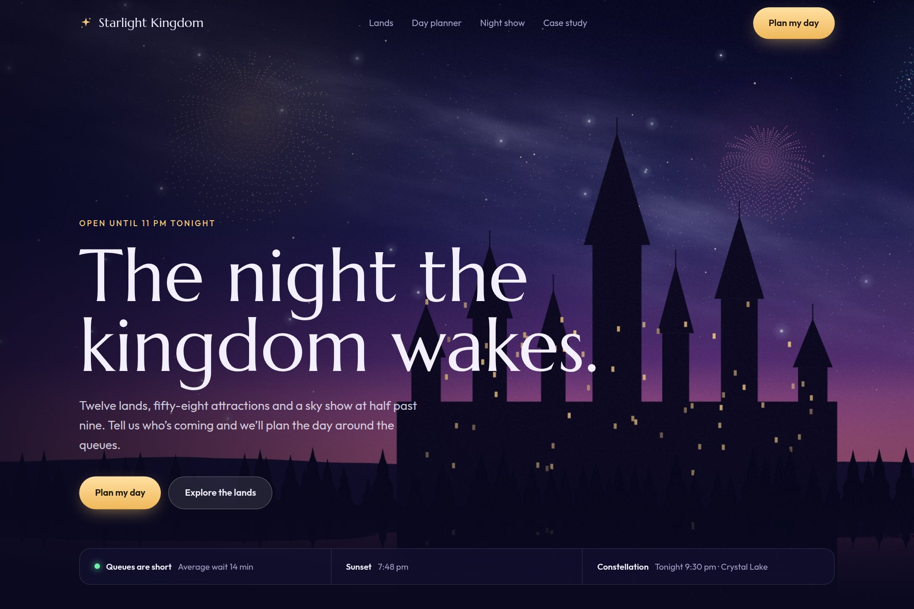

09 — Destination experience
A destination page that also plans the day.
A cinematic landing concept and a queue-aware itinerary planner sharing one visual system.

- Type
- Concept · self-directed
- Discipline
- Web · UI · Brand · Product
- Deliverables
- Landing concept, planner workspace, itinerary logic
- Modes
- 3 planner modes
01The brief
Destination sites sell the visit and then leave the planning to the visitor, usually in a separate app with a different design language.
The concept had to do both jobs in one place, and make the itinerary — not the brochure — the page’s primary output.
02Design decisions
- Three planner modes — explorer, family and night spectacle — instead of one generic itinerary builder.
- Routes optimised against queue times, with live show reminders treated as part of the plan.
- The cinematic landing and the planning workspace share one visual system, so the handoff never feels like a different product.
03Outcome
A landing page and a planning workspace that read as one product, with itinerary output as the page’s primary conversion instead of a generic ticket link.
3Planner modesExplorer, family, night spectacle.
1Visual systemLanding and workspace share it.
0Separate appsPlanning stays on the site.
A concept project designed in-house by Yonder Tech, not a client engagement. Figures describe the delivered design system, not commercial results.